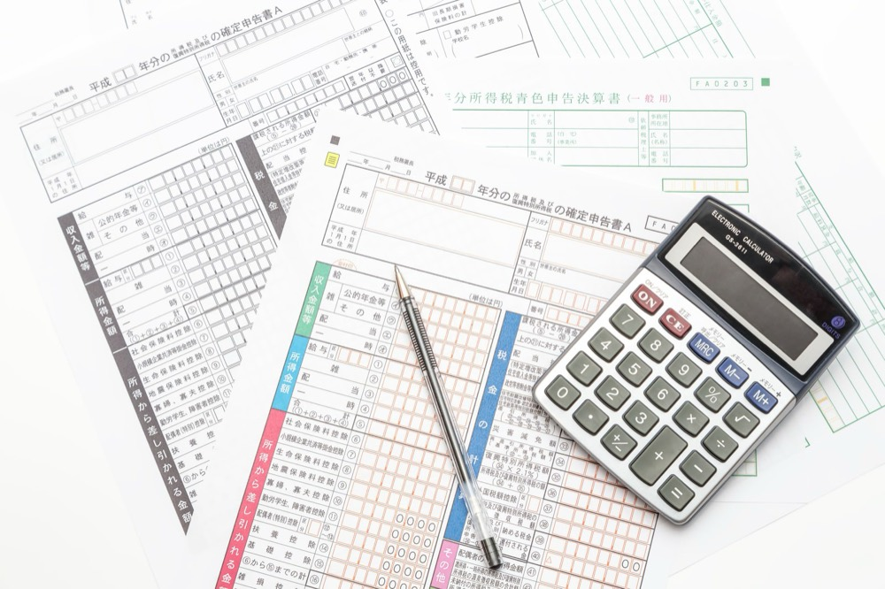

決算書は毎月チェックしていても、自分自身の資産については「なんとなく」で済ませていないでしょうか。会社の数字には敏感な経営者ほど、個人の資産管理は後回しになりがちです。この記事では、経営者が50代を迎える前に、個人資産の「設計図」を見直しておくべき理由と、具体的な見直しのステップを解説します。
経営者の個人資産が「なんとなく」になりやすい理由
なぜ経営者は、会社の数字には詳しくても、個人資産の把握が甘くなりやすいのでしょうか。
決算書のチェックに意識が向きやすいから
日々の業務では、会社の売上・利益・キャッシュフローを確認することが習慣になっています。一方で、自分自身の資産がどのように構成されているかを定期的に確認する機会は、意識しない限り生まれにくいものです。
会社の資産と個人の資産の境界が曖昧になりやすいから
中小企業の経営者は、個人資産の多くが自社株や事業用不動産で構成されているケースが少なくありません。会社の資産と個人の資産が実質的に一体化しているため、「自分個人の資産がいくらあるのか」を正確に把握しづらい構造になっています。
50代を迎える前に資産を見直すべき理由
なぜ「50代になる前」というタイミングが重要なのでしょうか。
事業承継・相続の準備には時間がかかるから
事業承継や相続に関する対策は、検討から実行まで数年単位の時間がかかることが少なくありません。相続が発生してから慌てて自社株の評価や後継者への承継方法を検討するのでは、選べる選択肢が限られてしまいます。早めに着手するほど、取れる対策の幅は広がります。
リスクを抑えた資産配分に切り替える時期だから
50代は、子育てにかかる費用が落ち着き始める一方で、リタイア後の生活を見据え始める時期でもあります。積極的にリスクを取る資産運用から、守りを意識した資産配分へと少しずつ切り替えていくタイミングとして、50代前後は一つの節目になります。
資産の設計図を見直す3つのステップ
具体的に何から着手すればよいのか、3つのステップに分けて考えてみましょう。
ステップ1：個人資産と会社資産を棚卸しして分けて把握する
まずは、自社株・事業用不動産・個人名義の預貯金や有価証券など、資産の種類ごとに「会社のものか、個人のものか」を整理してみましょう。境界が曖昧なままでは、次の対策も検討しづらくなります。
ステップ2：非課税制度の活用を検討する
個人名義の資産形成については、NISAやiDeCoといった非課税制度の活用も選択肢の一つです。すでに事業に資産を集中させている経営者ほど、個人資産の分散先として検討する価値があります。ただし、資産を分散させすぎると管理の手間が増えるという側面もあるため、無理のない範囲で取り入れることが大切です。
ステップ3：事業承継・相続について専門家に相談する
自社株の評価や相続税の試算、事業承継のスキーム選定は、税理士や弁護士など専門家の知見が欠かせない領域です。早い段階で専門家に相談し、自社に合った対策を一緒に整理していくことをおすすめします。
まとめ
- 経営者は会社の数字に意識が向きやすく、個人資産の把握が「なんとなく」になりがち
- 事業承継や相続の準備には時間がかかるため、50代を迎える前の見直しが望ましい
- 個人資産と会社資産の棚卸し、非課税制度の活用、専門家への相談の3ステップで整理を進める
自分自身の「資産の設計図」を持っておくことは、事業の継続と、その先の人生設計の両方を支える土台になります。
この記事について
経営者向けコラムの執筆サンプルです。専門的な判断が必要な内容には必ず「専門家への相談」を明記し、断定的な表現を避けて執筆しています。
同じ流れで、ご依頼のジャンル・読者層に合わせたコラムを執筆します。
執筆のご相談はこちら